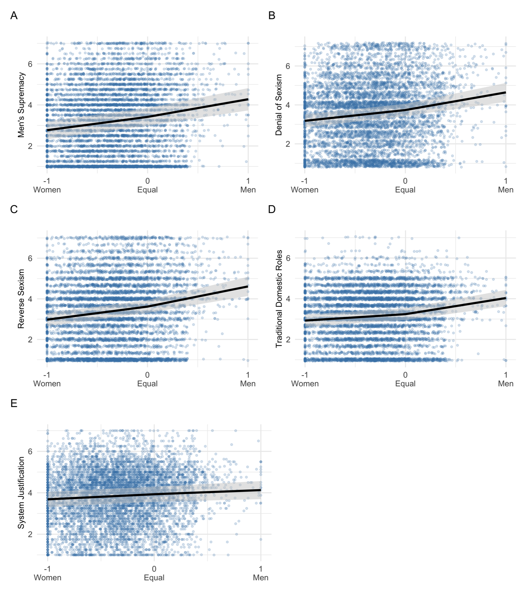
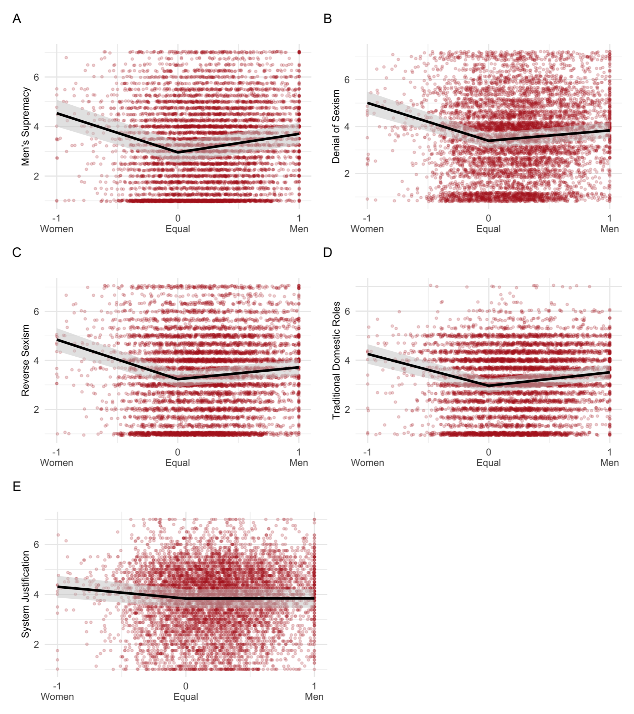
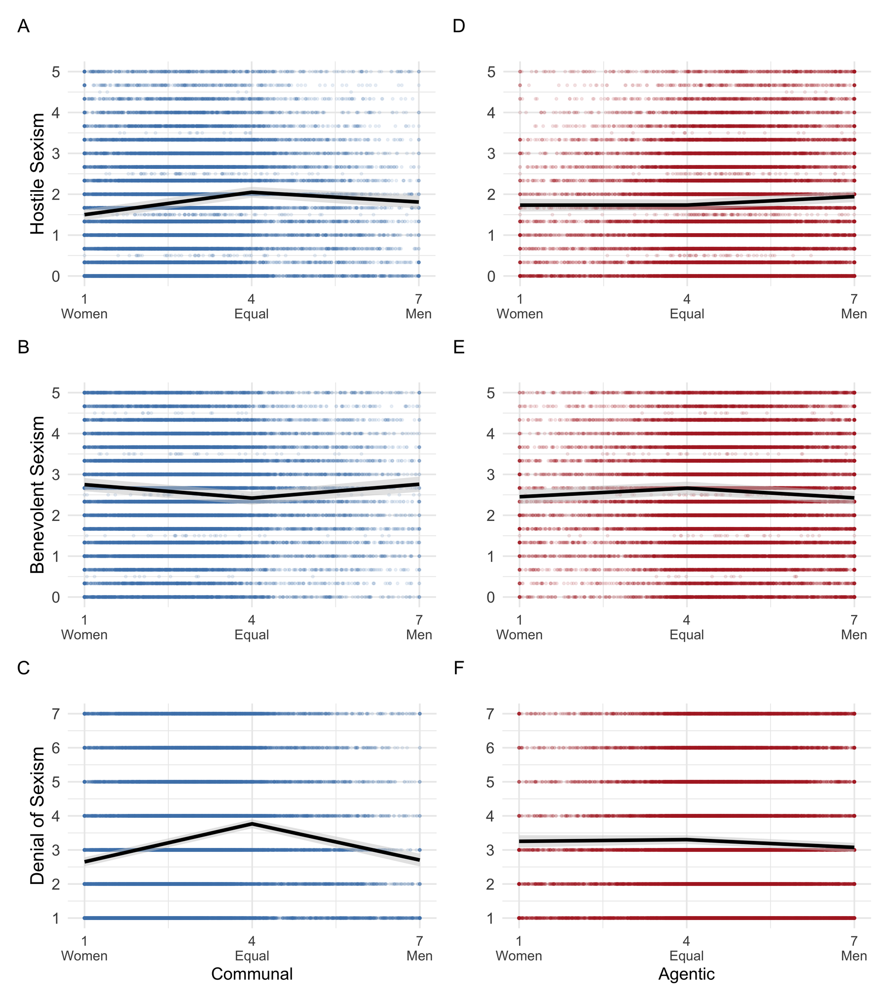
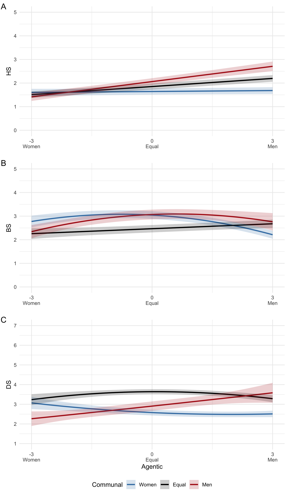

Gender Stereotypes and Sexist Attitudes around the World
Background
Being communal (e.g., warm, moral, and kind) and being agentic (independent, competitive, assertive) are two sets of qualities that people use to describe themselves and others. Women are often seen as communal (and not agentic), while men are viewed as agentic (and not communal). These beliefs are called communal and agentic gender stereotypes, respectively. Theories in psychology of gender predict that stereotypes and sexist attitudes are linked. Nonetheless, empirical evidence supporting this prediction is lacking. Using two multi-national datasets, we studied how endorsement of communal and agentic stereotypes promote different forms of egalitarian and sexist beliefs.
Study 1
Data
- Survey data: from 14 countries, N = 7,001, with representative samples
Measures
Stereotypes: communal traits (e.g., compassionate, helpful) and agentic traits (e.g., ambitious, decisive), were rated as either “more true of women than men,” “equally true of men and women,” or “more true of men than women”. The ratings were averaged to get a composite score from -1 (more true of women than men) to 1 (more true of men than women) for communal and agentic traits.
Sexist Attitudes Outcomes: scales measuring men’s supremacy, denial of sexism, reverse sexism, traditional domestic roles
Controls: gender, subjective socioeconomic status, age
Model
We fit a mixed-effects regression predicting each outcome from communal and agentic trait ratings, with random intercept for countries. Trait ratings (i.e., communal and agentic stereotypes) are entered as splines with a knot at 0, so the slope can differ depending on whether women vs. men are seen as having more of the trait.
Show Stata code
* Splines with a knot at "equal" (0)
mkspline s1_communal 0 s2_communal = communal
mkspline s1_agentic 0 s2_agentic = agentic
* Example outcome: men's supremacy
mixed oldf_atw s1_communal s2_communal s1_agentic s2_agentic ///
female c_ses10 c_age || country:, reml dfmethod(kroger)
* Predicted values at women more (-1), equal (0), men more (1)
margins, at(s1_communal=-1 s2_communal=0) ///
at(s1_communal=0 s2_communal=0) ///
at(s1_communal=0 s2_communal=1) saving(s1_margins_ms_com, replace)
margins, at(s1_agentic=-1 s2_agentic=0) ///
at(s1_agentic=0 s2_agentic=0) ///
at(s1_agentic=0 s2_agentic=1) saving(s1_margins_ms_agent, replace)The same model is fit for each of the outcomes.
Results


The figures are drawn in R from the margins saved in Stata:
Show R code
library(tidyverse)
library(haven)
library(patchwork)
df <- read_dta("data1.dta")
x_labels <- c("-1" = "-1\nWomen", "0" = "0\nEqual", "1" = "1\nMen")
# Jitter raw points to avoid overplotting
df$communal_jitter <- pmin(pmax(df$communal + runif(nrow(df), -0.4, 0.4), -1), 1)
# Predicted margins saved by Stata
df1 <- read_dta("s1_margins_ms_com.dta") %>% mutate(communal = c(-1, 0, 1))
ms_com <- ggplot(df1, aes(x = communal, y = `_margin`)) +
geom_jitter(data = df, aes(x = communal_jitter, y = oldf_atw),
alpha = 0.2, size = .8, color = "steelblue") +
geom_ribbon(aes(ymin = `_ci_lb`, ymax = `_ci_ub`), fill = "grey80", alpha = 0.5) +
geom_line(color = "black", linewidth = 1.1) +
scale_x_continuous(breaks = c(-1, 0, 1), labels = x_labels) +
labs(x = NULL, y = "Men's Supremacy") +
theme_minimal()
# ...repeated for each outcome, then combined with patchwork:
combined_plot <- ((ms_com | ds_com) / (rs_com | tgr_com) / (sj_com | plot_spacer())) +
plot_annotation(tag_levels = "A")Study 2
Data
- survey data from 62 countries, N = 33,313
Measures
Stereotypes: communal traits and agentic traits, were rated from 1 “more true of women than men” to 7 “more true of men than women”. These ratings were averaged to get a composite score from 1 (more true of women than men) to 7 (more true of men than women).
Sexist attitudes: scales measuring hostile views of women, benevolent sexism (e.g., paternalism), denial of sexism.
Controls: gender, subjective socioeconomic status, age
Results


Takeaways
Sexist attitudes were generally lowest among people who saw women as more communal.
Seeing men as more communal (and women as more agentic) was linked to stronger sexist beliefs in Study 1.
In Study 2, sexism was generally the highest among those who viewed men and women as equally communal and agentic. There was also an interaction effect such that overall assigning communality to women and agency to men was related to lower sexism.
The findings are surprising because communal stereotypes are theorized to promote sexism. By challenging previous theories, findings provide a nuanced understanding of lay beliefs about gender.
Full code: Study 1 (Stata) · Study 2 (Stata) · Figures (R)
Paper: Goudarzi, S., & Napier, J. L. Are communal stereotypes necessarily sexist?